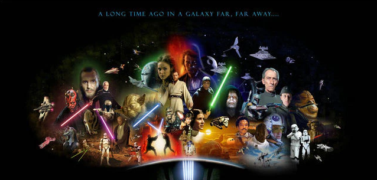

Summary of Movies
Star Wars The Phantom Menace: Two jedi escape from the Trade Federation and come across a boy that is strong in the force believed to be the chosen one, meanwhile the thought to be extinct sith have returned.
Star Wars Attack of the Clones: A jedi tries to find out who is behind an assasination attempt on a senator and find that an army is being created for the jedi. Meanwhile, Anakin is in charge of protect the senator but falls in love.
Star Wars Revenge of the Sith: The sith rise into power and the jedi are wiped out, Anakin turns against the jedi and becomes a sith.
Star Wars A New Hope: A farmboy yearning for adventure is met with two droids from the rebellion to deliver a message to the Ben Kenobi to warn him about the Empire and their super weapon The Death Star.
Star Wars The Empire Strikes Back: The Empire attack the Rebel Alliance after the destruction of the death star. Meanwhile the farmboy trains to become a jedi.
Star Wars Return of the Jedi: The Empire begins construction on a second death star. The rebel alliance begin preparing for battle. The farmboy becomes a jedi knight and has to defeat the sith.
Star Wars The Force Awakens: The First Order rose up from the empire and have rained terror through the galaxy. But a young girl on a desert planet finds that she has the force.
Star Wars The Last Jedi: Luke is found but doesn't want to help the resistance because of his past failures. The resistance is on the run from the First Order
Star Wars The Rise of Skywalker: Palpatine has returned. The Resistance gather their forces to take down the Final Order once and for all.
Rogue One a Star Wars story: A small band of rebels hatch a plan to steal plans to a battle station called the Death Star by the Empire.
Solo a Star Wars story: A smuggler named Han Solo joins a heist within the criminal underworld.
The Original Trilogy
The First Star Wars movie, Star Wars A New Hope, was created in 1977 by George Lucas.
A New Hope was about a farmboy on an adventure to save a princess from the evil Empire.
When he was making the first movie he thought that the first movie was going to flop
but he was suprised that it was a massive success. After seeing the movie was a
hit George Lucas decided to make a sequel to the movie named "The Empire Strikes Back".
Previously, George Lucas directed A New Hope but for Empire Irvin Kershner was the director.
There were a lot of worries that Star Wars may end with the Empire Strikes Back if it doesn't
work. The movie released in 1980 became a massive success and many fans love the movie to this day. After
Empire, George Lucas decided that he was going to make the final sequel to Star Wars called
"Revenge of the Jedi". The title was later changed to Return of the Jedi. The director for
Return of the Jedi was passed to Richard Maquand. The film was released in 1983 an was also a
hit. In all 3 of these movies they used puppeteering and practical effects.
The Prequel Trilogy
After 15 years have passed since the Original Trilogy ended George Lucas decided that he was
going to start making the Prequel Trilogy. In which it tells the story of Anakin Skywalker and
his turn to becoming Darth Vader. He started working on Episode 1 titled "The Phantom Menace".
The film used a combination of puppeteering, blue/green screen, and actual sets. The film was released in
1999 and was a hit but many critics critiqued the film. George Lucas decided to make Episode 2 called
"Attack of the Clones" still using the same techniques with blue/green screen and built sets. The film
was released on 2002 and was financially successful but the fans at the time disapproved of the film.
After George Lucas received disapproval from the other films, he decided to make the last prequel film
Episode 3 "Revenge of the Sith". The movie was released in 2005 and was a financial success and
the Critics had mix reception of the film. After Revenge of the Sith, George Lucas decided to make
The Clone Wars cartoon in 2008. Many fans disliked the prequels and called them "the worst Star Wars movies".
That was it for Star Wars Movies by George Lucas.
The Disney Trilogy
In the year of 2012, George Lucas sold the rights to Disney. George Lucas had a script for the sequel
trilogy but Disney turned it down and decided to write their own. The first movie Disney made was Episode
7 "The Force Awaken" written and directed by J.J. Abrams (Who also made the newer Star Trek Films)released in 2015.
The movie was financially successful and the critics liked to movie. although some fans online disliked the movie,
majority of fans enjoyed it at the time. Disney made a spin-off movie called "Rogue One" where it takes place between
Episodes 3 and 4 telling the story of how the rebels got the death star plans. The movie was released in 2016 and it
was a success and people and critics liked the movie. In the year 2017 the sequel to The Force Awakens called
"The Last Jedi" was directed and written by Rian Johnson. The Last Jedi did good financial, the critics loved it
but the fans were divided on the movie online. Saying that it was either bad or good. The next movie came in 2018
by the name "Solo" directed by Ron Howard. The movie financially did terriable and lost money. The critics found
the movie okay. Episode 9 was released on 2019, the film was called "The Rise of Skywalker" the film was directed
by J.J. Abrams and written by J.J. Abrams and Chris Terrio. The film made money but some critics liked it others didn't
and the fans that remained disliked the movie too. As of right now Disney has stopped making Star Wars films but is
continuing making Star Wars shows such as The Mandalorian. After the sequels more fans began to like the prequels more.